Der Südthüringer Literaturverein hat seit seiner Gründung 1990 zahlreiche gemeinschaftliche Publikationen herausgebracht – Anthologien, Literaturkalender und Sonderprojekte.
.jpg)
Literaturkalender „Thüringer Ansichten" 2024
Nach neunjähriger Pause brachte der Literaturverein wieder einen Literaturkalender „Thüringer Ansichten" heraus. Als Zwei-Wochen-Kalender (DIN A3) vereint er Texte von 27 Autorinnen und Autoren mit Fotos und Grafiken von 24 Künstlerinnen und Künstlern aus der Südthüringer Region. Die Premiere fand am 22. September 2023 im Buchhaus Suhl statt. Preis: 15 €, im örtlichen Buchhandel erhältlich.
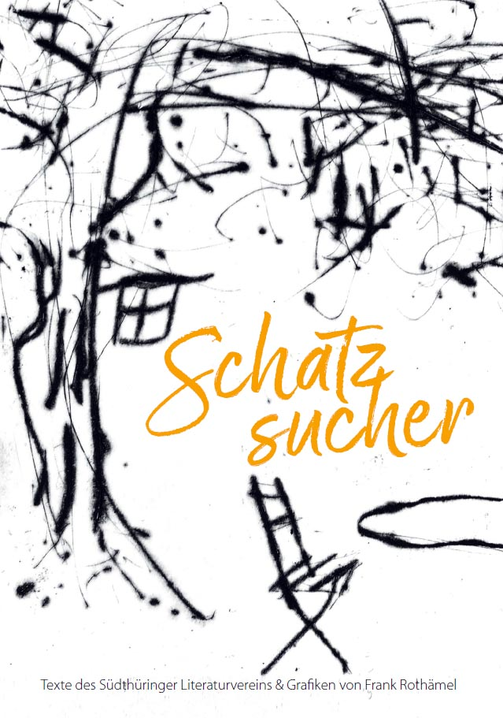
„Schatzsucher" – Vereinsanthologie 2020
Im 30. Jahr der Gründung des Südthüringer Literaturvereins und der deutschen Wiedervereinigung erschien diese Anthologie mit Erzählungen und Gedichten von 17 Autorinnen und Autoren der Region. Die Sammlung gibt einen Überblick über das literarische Leistungsvermögen im Verein. → Mehr zur Veröffentlichung
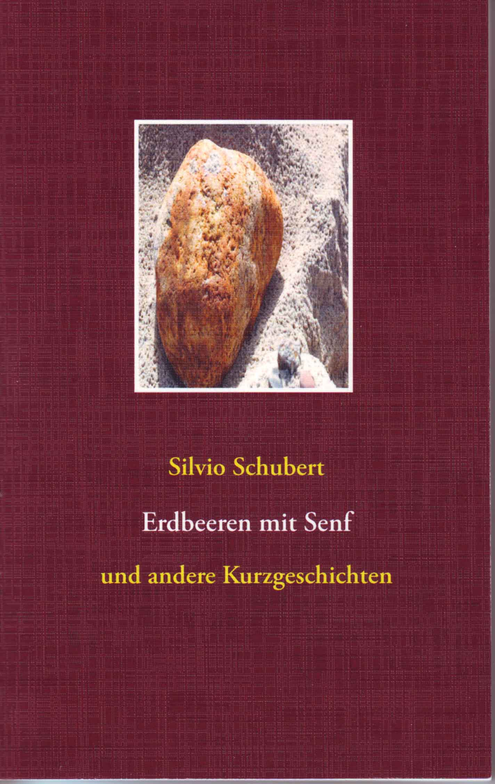
Silvio Schubert – Vereinsmitglied und Autor
Langjähriges Vereinsmitglied mit vier Kurzgeschichtenbänden (1999–2016). Schubert denkt die Wirklichkeit konsequent weiter, bis ihre Absurdität auch dem Leser erkennbar wird. → Zur Autorenseite
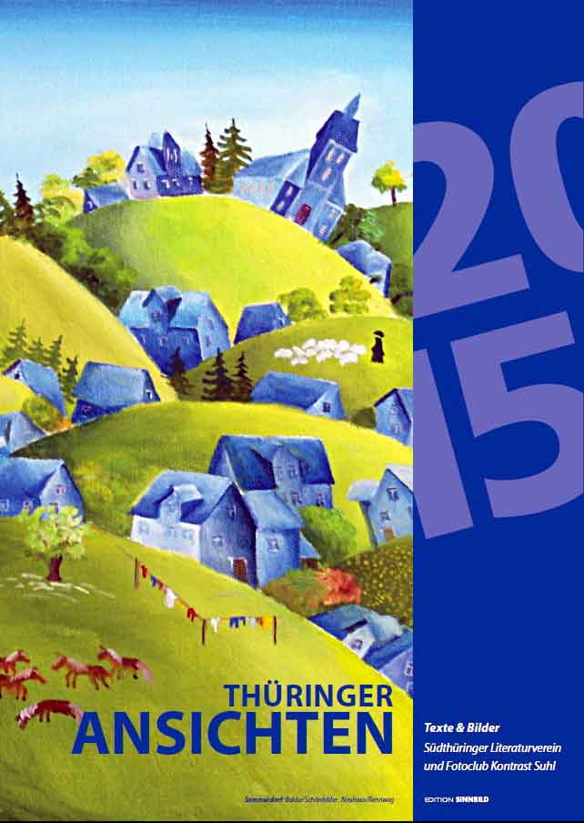
Literaturkalender „Thüringer Ansichten" 2015
Mit 90 beteiligten Thüringer Künstlerinnen und Künstlern – realisiert mit Lottomitteln aus den Überschüssen der Thüringer Staatslotterie. Buchpremieren in Suhl und Jena.
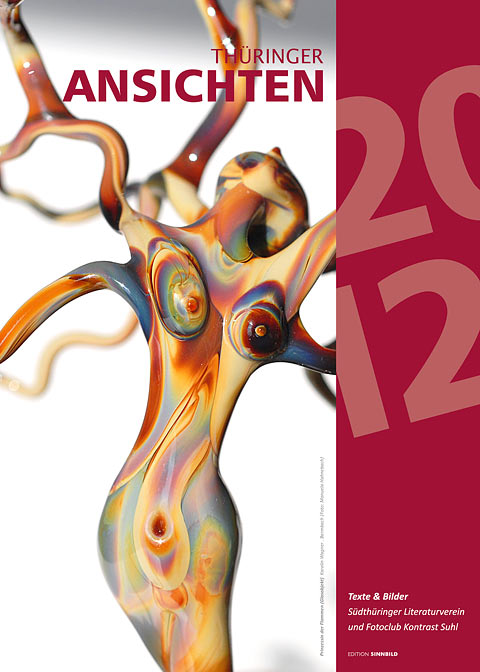
Literaturkalender „Thüringer Ansichten" 2012
An diesem Literaturkalender sind insgesamt 90 Thüringer und mit Thüringen befreundete Künstlerinnen und Künstler beteiligt – 54 Autoren und 36 bildende Künstler und Fotografen. Gefördert vom Thüringer Ministerium für Bildung, Wissenschaft und Kultur.
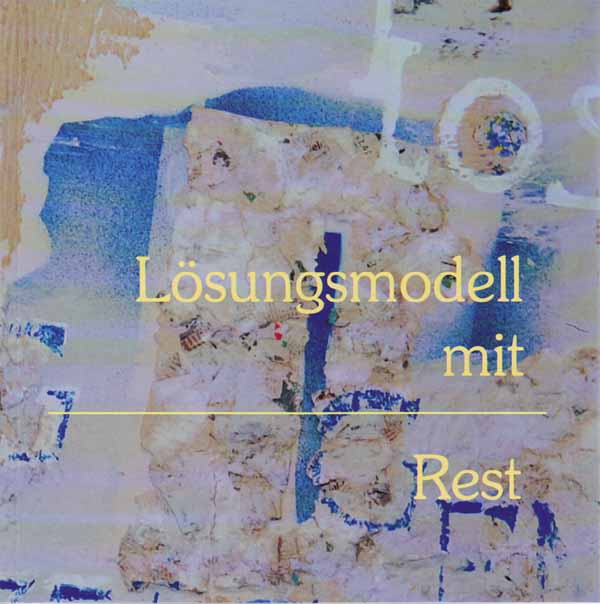
„Lösungsmodell mit Rest" – Anthologie 2010
Anlässlich des 20-jährigen Vereinsjubiläums erschien diese 94-seitige Anthologie mit den besten Texten, gewidmet dem Thema 20 Jahre deutsche Einheit. Mit Grafiken von Annette Wiedemann. Uraufgeführt zum Thüringer Tag der Literatur am 26. März 2010 in der Stadtbücherei Suhl.
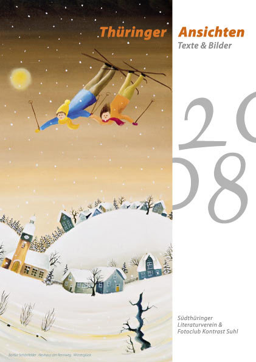
Thüringer Literatur-Wochenkalender 2008
Mit 53 Thüringer Autorinnen und Autoren sowie 26 bildenden Künstlern und Fotografen, gefördert vom Thüringer Kultusministerium. Gestaltung: Andreas Kuhrt.
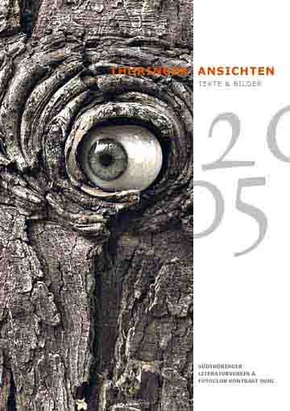
Literaturkalender „Thüringer Ansichten" 2005
Unter Federführung der stellvertretenden Vorsitzenden Heidi Büttner entstand dieser Kalender (DIN A3) in enger Zusammenarbeit mit dem Suhler Fotoclub „Kontrast". Gestaltung: Andreas Kuhrt, Suhl.
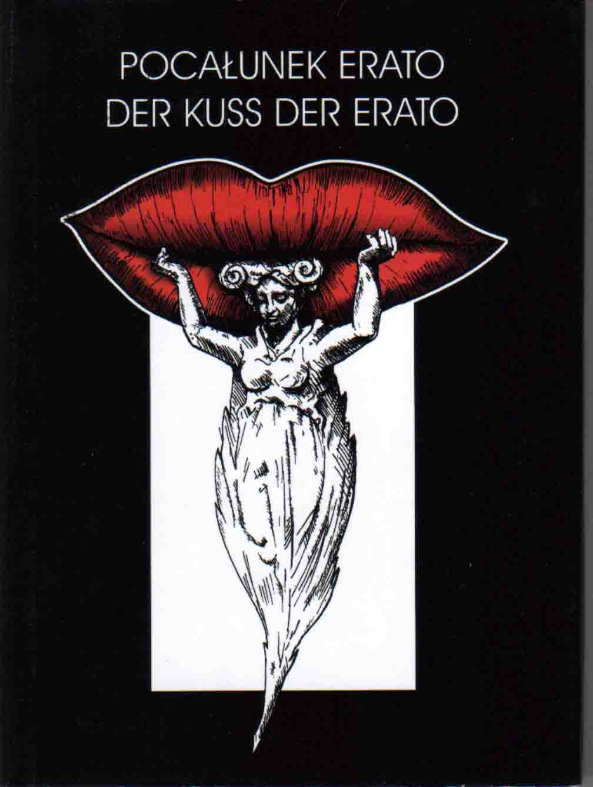
„Pocalunek Erato – Der Kuss der Erato" 2004
Dank der Städtepartnerschaft zwischen Suhl und Leszno (Polen) erschien dieses zweisprachige deutsch-polnische Lyrikprojekt, hrsg. von Waldemar A. Zamlewski in Poznań. Mit Gedichten von 7 polnischen und 12 deutschen Autoren. Buchpremieren in Leszno und Suhl.
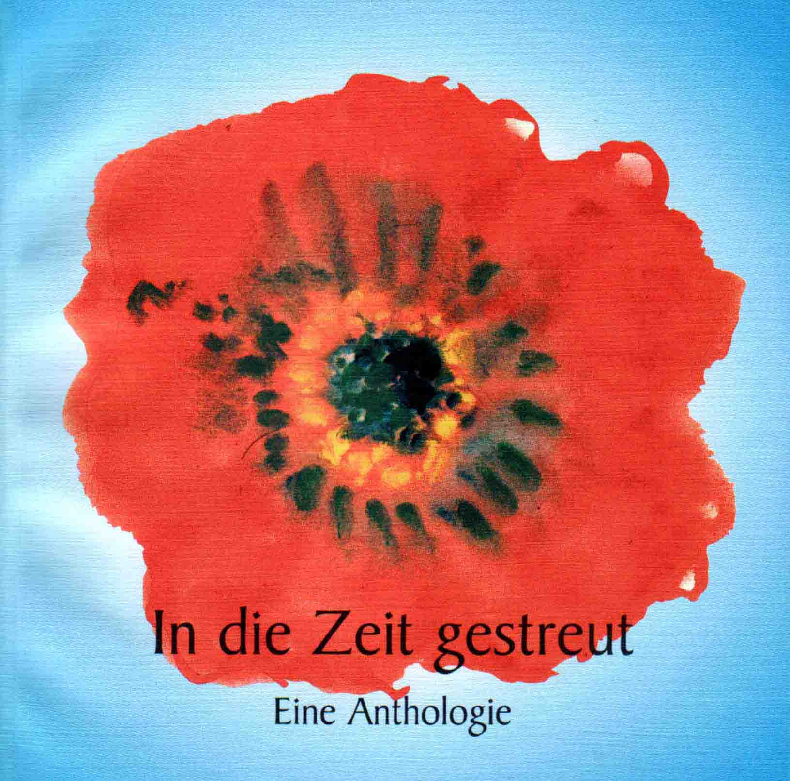
„In die Zeit gestreut" – Anthologie 1999
Textbeiträge von 20 Autorinnen und Autoren mit Grafiken von Christa Göhler aus Suhl, erschienen beim mca Autorenservice Michael Carl, Suhl.
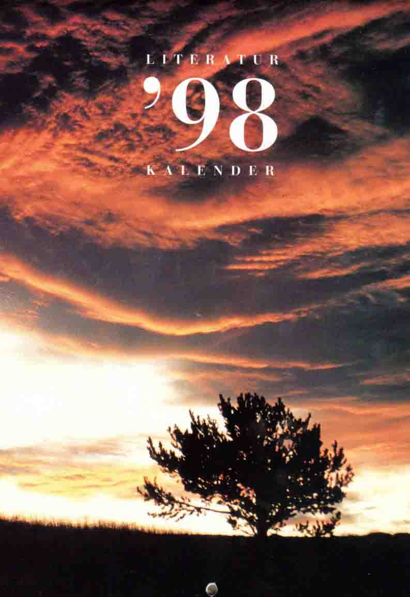
Literarischer Wochenkalender Südthüringen 1997/98
Erstmals stellte der Verein 1997 einen literarischen Wochenkalender für Südthüringen zusammen. 53 Schriftstellerinnen und Schriftsteller sind vertreten, Fotografien und Grafiken kommen vornehmlich von Thüringern. Gestaltung: Dietrich Ziebart, Suhl/Meiningen.
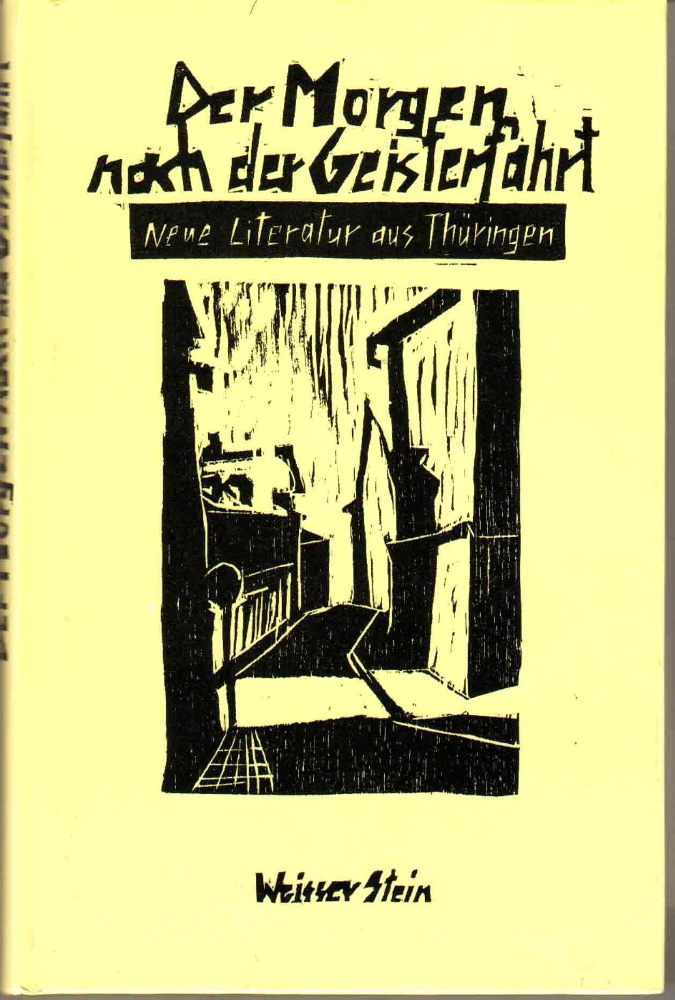
„Der Morgen nach der Geisterfahrt" – Anthologie 1993
Neue Texte aus Thüringen mit Gastbeiträgen aus Hessen, Bayern und Rheinland-Pfalz. Mit Vorwort von Walter Werner und Grafiken von Peter Zaumseil melden sich 27 Thüringer Autorinnen und Autoren zu Wort – vorrangig zur Wende-Thematik. Erschienen im Verlag Weisser Stein Greiz, gefördert vom Thüringer Ministerium für Wissenschaft und Kunst.
Für Informationen zu Bezugsmöglichkeiten schreiben Sie an uske.suhl@gmail.com.